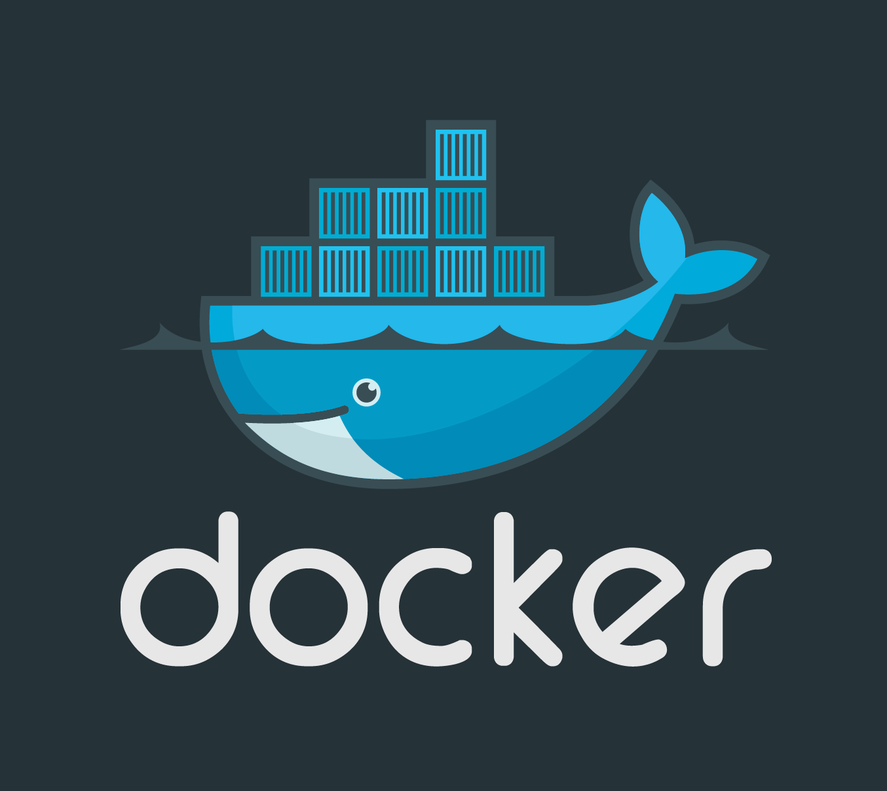

Durant cette SAE, nous devions créer une documentation technique et utilisateur automatique pour un entreprise et ses fichiers C commentés. Pour cela nous avons utilisé Docker, et diverses langages de programmation comme du bash, du markdown,.. Cette SAE à débuté avec 3 séances pour apprendre l'utilisation de Docker, la première est la présentation\tuto de Docker, la deuxieme est la façon de renvoyer une documentation et la derniere partie est un programme bash qui permet de faire cette documentation technique automatiquement.